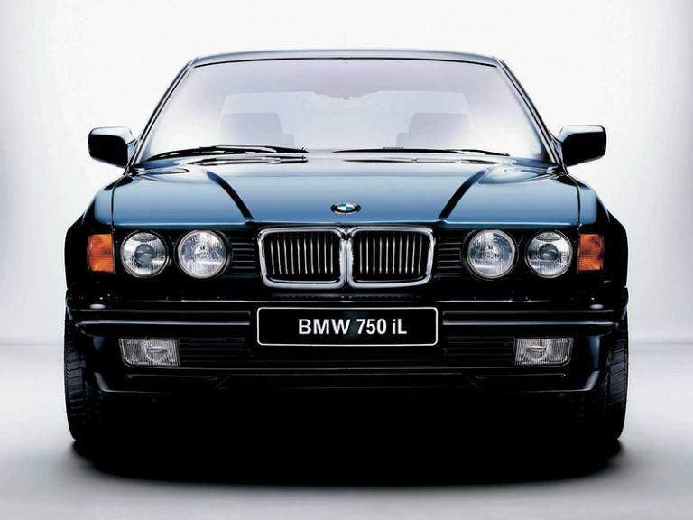

Historia de BMW
1918 - 1921
Fabricante de motores para aviones
La historia de bmw se funda con el señor y creador de la marca de carros de lujo " Bayerische Flugzeug-Werke (BFW) "
Se funda el 7 de marzo de 1916 e incorpora la planta de Otto-Werke. Un año después, Max Friz asume el cargo de ingeniero jefe en la factoría de motores de Rapp-Motorenwerke. Su reto es diseñar un propulsor que permita a los aviones volar a mayor altura. El resultado es una mecánica de seis cilindros en línea en el que la culata y los cilindros forman un bloque indivisible. Aunque no tiene terminados los planos técnicos, una delegación de la Aviación Nacional se interesa por el proyecto y le encarga 600 motores. El éxito de la empresa motiva su reorganización. El fundador, Kart Rapp, se marcha.
1921 - 1930
Comienza la producción de motocicletas
Comienza la producción de motocicletas
El Tratado de Versalles (1919) prohibe la
fabricación de
motores para aviones, por lo que la exitosa
actividad de
BMW
se interrumpe drásticamente.
Como alternativa, la compañía, prueba suerte en el
mercado
de las motocicletas: primero construye propulsores y
después, sus propios modelos de dos ruedas.
El 28 de septiembre de 1923 se presenta el primero
de
ellos.
Pese a que la competencia en ese momento es brutal,
la
R32,
con un motor de 8,5 caballos y un precio básico de
2.200
Reichsmark -una de las más caras del mercado-, tiene
mucho
éxito.

1931 - 1940
Llegan los automóviles
BMW adquiere en 1928 la factoría de vehículos de Eisenach e inicia una tercera actividad empresarial: la fabricación de automóviles. En esta planta se produce con éxito el Austin Seven bajo la denominación "Dixi 3/15 PS". La marca alemana continúa desarrollando este coche, que en 1929 sale a la venta con distintas carrocerías y el nombre de BMW 3/15 PS DA 2. Su popularidad ayuda a la empresa a sobrevivir durante los difíciles años de la Depresión. Corre el año 1932 cuando las instalaciones de Eisenach crean el primer BMW, el 3/20 PS. El "3" hace referencia a la carga fiscal, mientras que el "20" refleja su mayor robustez mecánica (su motor de 782 cc está basado en el cuatro cilindros del Austin Seven). En dos años se fabrican 7.215 vehículos. En 1933, BMW presenta el 303 bajo el eslogan "El más perfecto utilitario alemán de altas prestaciones". Su propulsor, el bastidor monoviga y la doble rejilla de aire del frontal son las claves del rumbo que tomará la marca. Un año más tarde aparece el 315/1, un deportivo biplaza de alumino que arrasa en las carreras y marca el comienzo de la imagen deportiva de BMW. En 1936 se presenta el 326: con su carrocería soldada al bastidor, puertas con bisagras delante, sistema hidráulico de frenos y rueda de repuesto oculta, está considerado uno de los modelos producidos en serie más modernos de la época. Por su parte, el BMW 328 celebra su lanzamiento de un modo único: Ernst Henne gana la medalla de oro en Nürburgring con él. Finalmente, en 1939 se crea el 335 en versiones berlina y cabrio, un coche potente y cómodo para largas distancias.

1941 - 1950
Una moto para el ejército
El ejército alemán demanda una moto todoterreno con sidecar que cuente con rueda motriz, reductora y marcha atrás. La respuesta de BMW es la R75, una motocicleta completamente nueva de la que se manufacturan 18.000 unidades en sólo tres años. Mientras, la marca continúa su labor como fabricante de motores para aviones. En 1942 diseña una mecánica de 2.500 caballos con sistema de regulación de válvulas: es el origen del sistema VANOS que se utiliza en los propulsores actuales. Las incursiones aéreas destruyen la planta de Munich en 1944, pero la de Allach queda prácticamente intacta cuando concluye la guerra. A mediados de 1945, BMW recibe autorización para reparar automóviles del ejército norteamericano en esta fábrica. Este permiso afecta también a las motocicletas, aunque la marca no está inicialmente en situación de poder hacerlo.
1951 - 1960
Nacen el "Ángel Barroco" y el isetta
Finalizado el conflicto bélico, BMW ha perdido la planta de Eisenach: reiniciar las labores de producción es complicado y no se consigue hasta 1951. Ese año se presenta el 501, más conocido como “Ángel Barroco” por su exterior clásico e interior plagado de innovaciones técnicas (dirección de cremallera, cambio en el volante…). Es el primer BMW que se fabrica íntegramente en Munich. En 1954 se le suma el 502, que monta el primer motor V8 de aleación ligera del mundo. Mención aparte merece la llegada del Isetta. Aunque a mediados de los 50 los críticos se han dejado seducir por las berlinas V8 y los deportivos de BMW, el pequeño modelo alemán (2,29 metros) propulsado por un motor de motocicleta es el que se gana el corazón del público. Durante los años cincuenta, más de 160.000 personas se compran uno, convirtiéndolo en el BMW más vendido de la década y en un símbolo del desarrollo posterior a la guerra. En 1956 aparece el BMW 507, un deportivo singular diseñado en menos de un año por Albrecht Goertz: sólo se fabrican 252 unidades, y la mayor parte del trabajo se realiza manualmente para satisfacer los deseos de cada comprador. A finales de la década, el pequeño BMW 700 es el primer vehículo con construcción unitaria (el suelo, las paredes laterales y el techo van soldados al habitáculo). Este "ratón con corazón de león” adquiere una enorme popularidad entre el público y en las carreras. Gracias a él, BMW recobra su legítima posición y se embarca en nuevos proyectos con fe renovada.
1961 - 1970
La nueva clase
El público demanda un coche de tamaño medio y la respuesta llega en el Salón de Frankfurt de 1961 con la presentación del BMW 1500. Este automóvil compacto y dinámico, el primero de “la nueva clase”, ofrece un elegante diseño, una suspensión deportiva y un potente motor capaz de alcanzar los 150 km/h. Le siguen el BMW 1800 (1963), el 1800 TI (1964) y el 1600 (1966). Este último modelo se lanza con motivo del cincuenta cumpleaños de BMW, y presenta una estética en la que destacan las ventanillas sin marco, dos puertas y superficies lisas sin adornos. El BMW 1600 se convierte en el primero de una larga serie de éxitos. Las nuevas berlinas 2500 y 2800 establecen en 1968 nuevos niveles en el segmento de lujo. El año siguiente, la marca alemana da continuidad a los 1600 TI y 2002 TI con el 2002 tii. La segunda "i" significa inyección: más gasolina y, por tanto, más potencia. El mercado de las dos ruedas también experimenta cambios: a mediados de la década, la moto deja de ser un medio de transporte y se convierte sobre todo en un vehículo para el ocio y el deporte. BMW presenta una gama de modelos completamente renovada, en la que sólo se mantiene fiel al motor bóxer de dos cilindros; a las versiones de 500 y 600 cc se suma una de 750 que monta el buque insignia, la R 75/5.
1971 - 1980
Tres nuevas series y pura sangre
Nace la Serie 5 (1972), con modelos que van desde el económico 518i al potente M5. La nueva berlina demuestra sus cualidades como vehículo para todos los públicos, tal y como dejan ver las cifras de ventas. Un año más tarde se inicia la producción del BMW 2002 turbo, el primer automóvil europeo con turbocompresor fabricado en serie. En 1975 sale al mercado una generación de coches que se convertirá en una de las más representativas de la marca: la Serie 3. En un principio sólo se lanzan tres modelos, aunque con el tiempo rondarán la treintena, desde el 316 hasta el M3. Su éxito es total: la marca vende siete millones de automóviles en 25 años. BMW vuelve a la carga un año más tarde con la Serie 6, un exclusivo coupé del que vende 86.000 unidades hasta 1989. Estas cifras lo convierten en el modelo de mayor vigencia de la historia de la empresa. Por su parte, la Serie 7, la berlina tope de gama, llega en 1977. Un año después aparece la primera creación de M GmbH, el BMW M1. Este coupé de motor central, diseñado por Giorgetto Giugiaro y desarrollado junto a Lamborghini, está destinado inicialmente a los circuitos: con un precio de unos 100.000 marcos, el M1 alcanza los 260 km/h y es un pura sangre del selecto club de los deportivos de altas prestaciones.
1981 - 1990
Llega una gran berlina
La década de los 80 está marcada por la entrada de BMW en el segmento de los motores de gasóleo. En 1983 lanza la mecánica 524td, que intenta conjugar las ventajas de la tecnología diésel y el dinamismo y la suavidad típicos de los propulsores de gasolina. Como alternativa, ese mismo año saca al mercado el motor 525e. Esta mecánica de gasolina bautizada con la “e” arroja 122 CV y apenas consume 8,4 litros/100 km. Otra novedad destacada se produce en 1985 con la aparición del 325iX, el primer BMW con tracción integral. La Serie 5 sigue pronto el ejemplo con el 525iX berlina y touring. No obstante, la sensación del decenio llega con la aparición del 750i/iL, la primera berlina alemana con motor doce cilindros de la posguerra. Bajo su capó esconde una de las mejores mecánicas del mundo, con 300 CV y sólo 240 kilos de peso. Exteriormente, este modelo se distingue de sus hermanos por su parrilla ovoide doble algo más ancha, un abombamiento ligeramente mayor del capó y las salidas de escape rectangulares. En 1988, BMW Technik GmbH presenta su primera creación: el BMW Z1, un roadster descubierto con chasis monocasco de acero y unas puertas que, al abrirlas, se hunden en el suelo. En 1991 se han vendido ya 8.000 unidades.
1991 - 2000
Una moto con techo
El crecimiento y el deseo de ampliar mercado motivan la compra del grupo británico Rover en 1994. BMW necesita modernizar los productos y las plantas por igual, un factor que mantiene el coste de la adquisición en un nivel relativamente bajo: 800 millones de libras. Un año más tarde ve la luz el Z3, roadster que protagoniza una conocida película de espías. Corre 1998 cuando BMW adquiere los derechos del nombre de Rolls-Royce. Aunque el fabricante alemán se compromete a no utilizar la marca para sí misma hasta 2003, pone en marcha sus planes para producir nuevos modelos y construir una nueva fábrica de Rolls-Royce en Goodwood. También es lanzado en esta década el BMW X5, que introduce a la firma en el mercado de los Sports Activity Vehicles, automóviles que pueden circular sobre cualquier superficie pero que también se muestran ágiles en asfalto. La marca demuestra asimismo su evolución con las Series 3, 5 y 7, además de con los modelos Z (destaca sobre todo el Z8) y X. Finalmente, el último año de milenio llega acompañado de un concepto inimaginable hasta ese momento: un vehículo que combina las ventajas de una moto (maniobrabilidad, tamaño reducido, etc.) con la seguridad de un coche (estructura de deformación programada, protectores a la altura de los hombros, cinturón de seguridad...). Es el C1, una motocicleta con techo que se puede conducir sin casco, ni ropa protectora.
< class="item">
2001 - 2010
Hacia la movilidad sostenible
El programa EfficientDynamics desarrollado por BMW
conjuga dos criterios: máxima potencia y mínimo consumo.
Bajo esta doble seña, la marca ha creado tecnologías
como el “Brake Energy Regeneration” (sistema de
recuperación de la energía de frenado), el “Auto
Start/Stop” (dispositivo que apaga el motor en paradas
cortas y lo pone de nuevo en funcionamiento con sólo
pisar el embrague), nuevos propulsores de cuatro
cilindros; mecánicas con inyección directa de
gasolina... Asimismo, BMW ha sido el primer fabricante
del mundo que, con su modelo Hydrogen 7, ha puesto a la
venta una berlina de lujo con motor de hidrógeno
producida en serie.
En 2014 se ha producido el lanzamiento de dos modelos
muy importantes de la firma: el monovolumen i3 y el
deportivo i8. Dos coches con un funcionamiento
totalmente eléctrico.